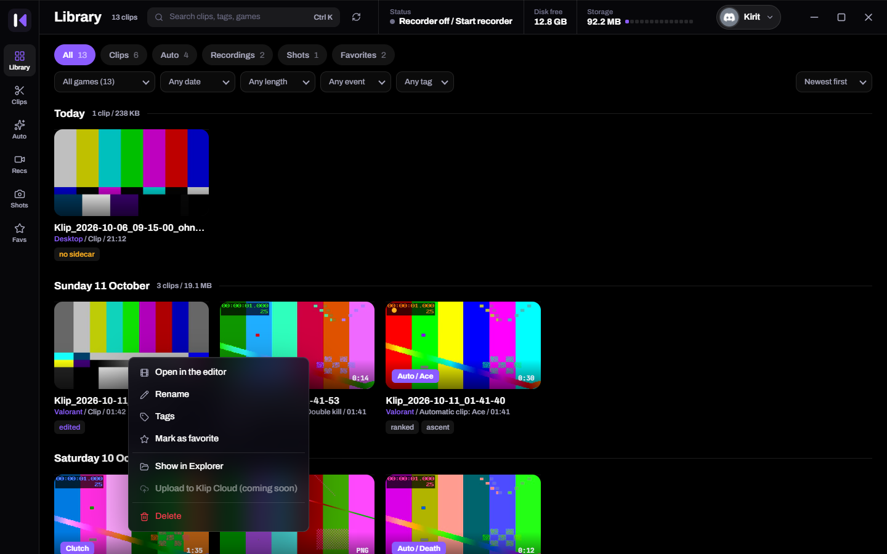
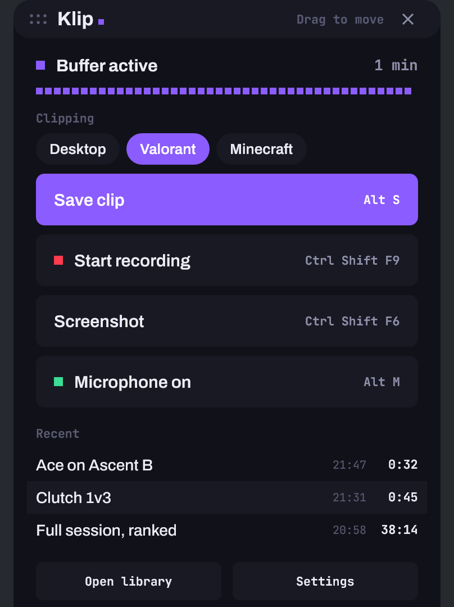
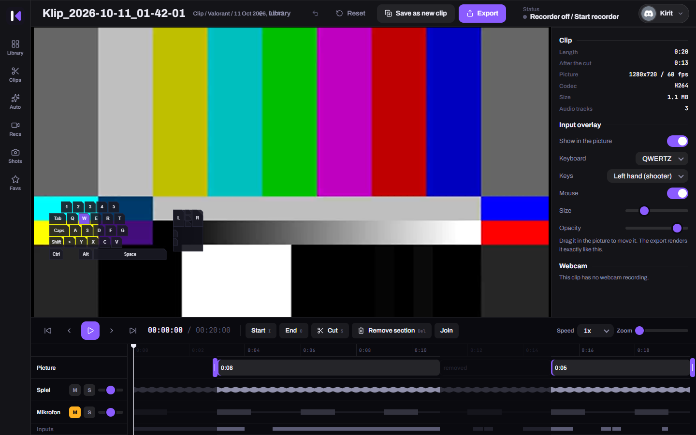
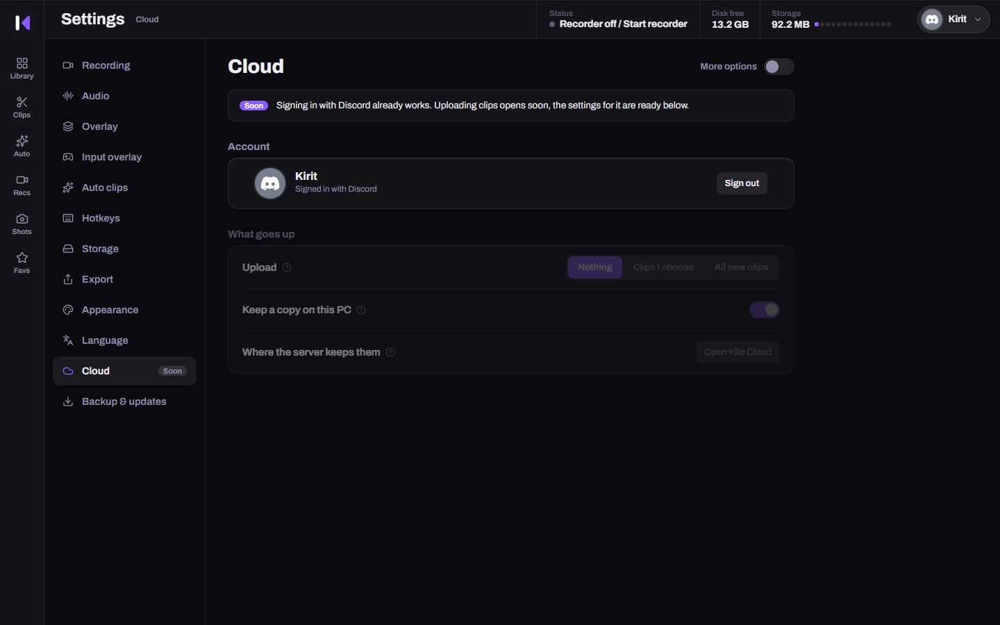

Replay buffer
Keeps the last seconds as encoded video in memory. Saving takes a fraction of a second, because nothing is encoded again.
Klip buffers your game in the background on the GPU and saves what just happened on a key press. Every audio source lands on its own track, so you decide in the editor whether Discord or music belongs in the clip.


Two programs: a small recorder in the tray that costs next to nothing, and an app for library and editing that only runs when you open it.
Keeps the last seconds as encoded video in memory. Saving takes a fraction of a second, because nothing is encoded again.
Uses the encoder of the graphics driver. Frames stay on the GPU from capture to encoder, and Klip asks the GPU to prefer its capture over a busy game.
Detects kills, deaths and round ends in the captured picture and saves the clip by itself. The library shows the reason.
Trim, delete segments, mute tracks. Your cuts live in a file next to the clip, the original stays untouched.
Keys and mouse clicks are stored next to the video, not burned into the picture. Whether they show in the clip is decided at export.
MP4, WebM, MKV, GIF, MP3 or WAV, fitted into 10 MB if you want. A clip that was only trimmed is exported without re-encoding.
The main monitor by default. Both monitors side by side in one picture are one click in the settings.
The panel shows what Klip clips for right now. One click switches to another detected game or to the desktop.
The camera sits as a file of its own next to the clip. Pick corner and size in the editor, or leave it out.
Every program that plays sound gets a track of its own in the same MP4, found by itself. Track 1 is always the finished mix, so any player plays the right thing.

Built for games with kernel anti-cheat. Every unknown game counts as protected. I play Valorant myself, and a ban caused by my own clip tool would be the worst possible outcome.
No anti-cheat vendor has reviewed or approved Klip. Detected events are never shown during a match, the only visible effect is the notice that a clip was saved.
Every key can be changed. Klip tells you when a combination is already taken by another program.
Sign in to Klip with Discord, that works already. Soon Klip uploads picked clips or all of them, and you watch them on your phone in the browser with the same Discord account. No app needed.
Want to host it yourself? The server is in the repo under cloud/ and runs on Node 22 without other packages.

Capture, encoding in three codecs, buffer, clips, recordings, screenshots, separate audio tracks, all monitors, tray, library, editor, export, the setup.
The overlay on top of a fullscreen game, auto clips on live Valorant picture, a real webcam, smooth clips at full GPU load. The detector found six of six events in three real clips, too few for a hit rate.
Uploading to the cloud, software encoding as a fallback, editable per game profiles, more games for auto clips, a measurement of the frame rate in a game.
Download Klip-Setup.exe from GitHub Releases and run it. Klip installs per user without admin rights and starts with Windows. Windows SmartScreen may warn because the file is not signed.
git clone https://github.com/ImKirit/Klip cd Klip/app && npm install && cd .. powershell -ExecutionPolicy Bypass -File scripts\stage.ps1
You need Rust (MSVC), Node.js and the WebView2 runtime. The result is the same setup.